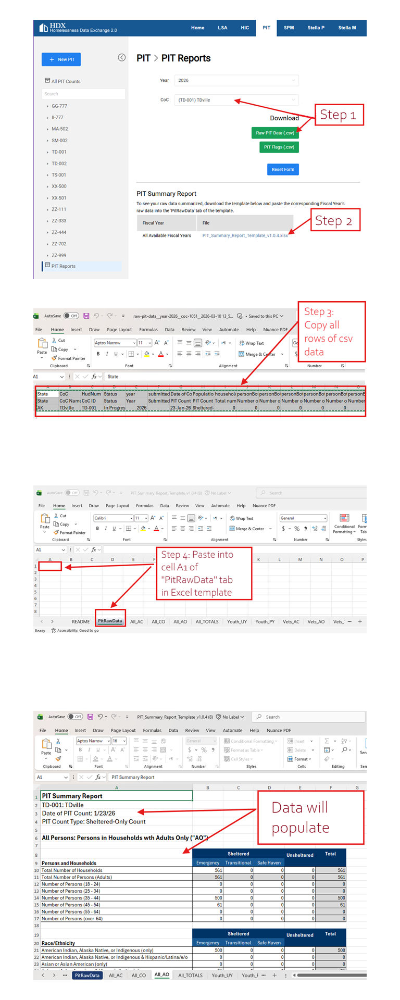
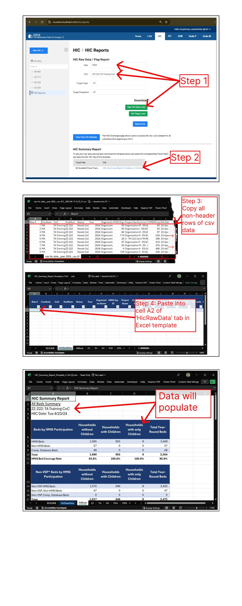

Guide to Using HDX Summary Report Templates
The SPM and HIC modules have provided Excel-based summary report templates. These templates are available on the "SPM Reports", "PIT Reports", and "HIC Reports" pages of each module.To produce a given summary report:
- Go to the Reports page for the module in question (e.g. modules/hudhdx2.info/spm/reports) and download the raw data .csv file for a single selected CoC. Open this .csv file in Excel.
- Download the Summary Report Template (an .xlsx file). If prompted, click "Enable Editing".
-
Copy the data from the .csv file.
- For the SPM you will copy two rows: a header row and a row of data.
- For the PIT, you will copy three rows: a row of header variable names, a row of header plain language descriptions, and a row of data.
- For the HIC, you will copy only the data rows (not the headers).
- Paste the data from the .csv file into the raw data tab of the .xlsx file. Refer to the screenshots below for reference.
Guide to Using PIT Summary Report Templates
The PIT template makes use of a formatted Excel Table on the "PITRawData" tab. The structure of this formatted Excel Table must be preserved in order to maintain the integrity of the calculations in the other tabs of the workbook. To do this, simply copy all of the data in the PIT csv. Take this copied data and paste it into cell A2 of the "PITRawData" tab. See guide below for more information. [These instructions also apply to the SPM Summary Report Templates, you will just need to swap the data and summary report template exports for those in the SPM module.]
Guide to Using HIC Summary Report Templates
The HIC template makes use of a formatted Excel Table on the "HicRawData" tab. The structure of this formatted Excel Table must be preserved in order to maintain the integrity of the calculations in the other tabs of the workbook. To do this, simply copy all of the data in the HIC csv except for the header row. Take this copied data and paste it into cell A2 of the "HicRawData" tab. See guide below for more information. Please be sure to select the correct HIC Summary Report template.